// perangkat & platform
Tech Stack

HTML

CSS

JavaScript

Tailwind CSS

ReactJS

Vite

Node JS

Bootstrap
Su

Supabase
MUI
Material UI
▲

Vercel
Fi
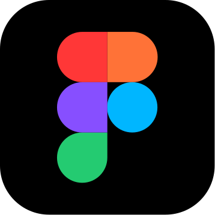
Figma
Py

Python
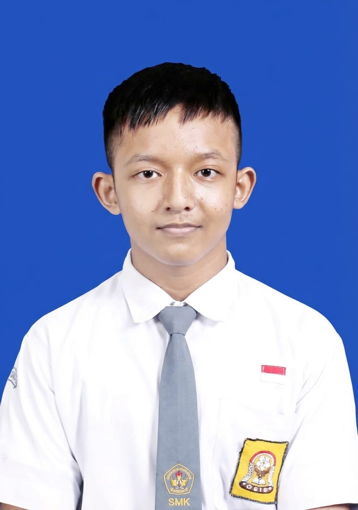
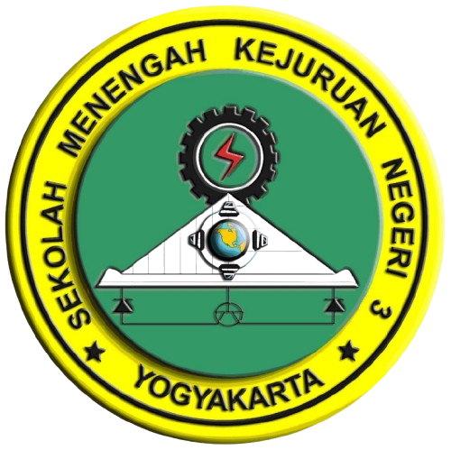
Machine Learning: Merancang, melatih, dan mengimplementasikan model *Deep Learning* tingkat lanjut untuk klasifikasi data, prediksi analitik, dan *Computer Vision*.
Web Development: Membangun aplikasi web *full-stack* dengan performa tinggi, responsif, dan arsitektur yang *scalable* untuk kebutuhan bisnis modern.
App Development: Mengembangkan aplikasi *cross-platform* (Android/iOS) dengan fokus pada optimasi performa dan *User Experience* (UX) yang intuitif.
Cyber Security: Berpengalaman dalam *Bug Bounty Hunting*, *Penetration Testing* menggunakan Burp Suite, dan audit keamanan untuk memperkuat postur keamanan sistem (Hardening).
Jaringan & Infrastruktur: Instalasi dan *splicing* kabel tembaga & fiber optic, konfigurasi jaringan LAN dan server lokal, serta perakitan dan *troubleshooting* hardware PC dengan ketelitian tinggi.

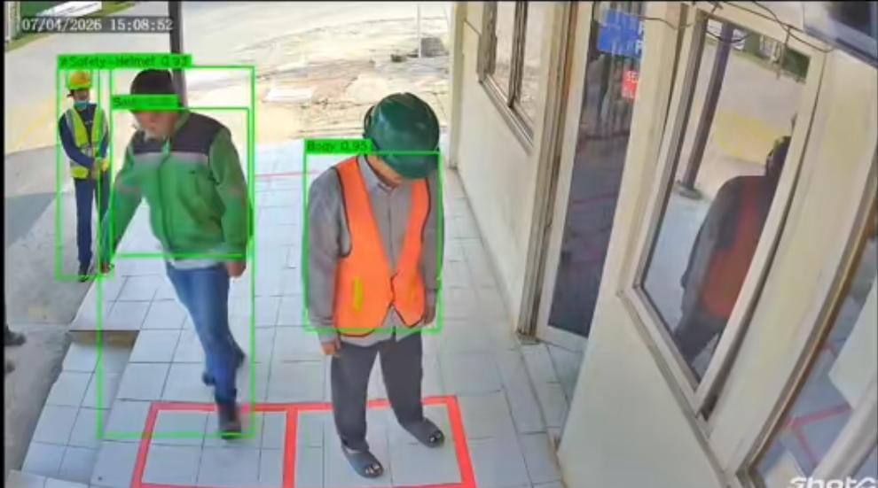
Sistem pemantauan keselamatan kerja otomatis berbasis kecerdasan buatan (*Computer Vision*) yang terhubung langsung ke kamera CCTV area proyek, mendeteksi kelengkapan APD secara *real-time* dan memberi peringatan dini pelanggaran protokol K3.
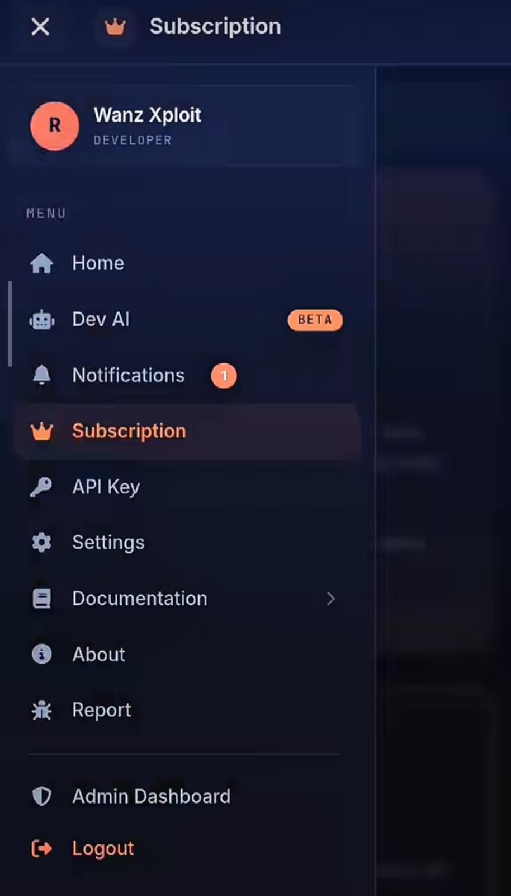
Dasbor analitik berbasis web untuk kebutuhan investigasi *Open Source Intelligence* (OSINT), lengkap dengan manajemen pengguna, enkripsi API Key, dan *Admin Dashboard* dark-mode yang futuristik.
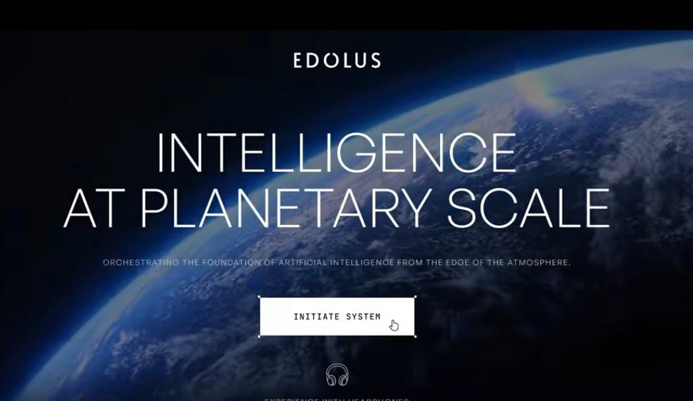
Situs web interaktif 3D imersif bertema *space-tech* dengan visual Bumi 3D beresolusi tinggi, animasi *cinematic*, dan *spatial audio* untuk memperkenalkan platform AI berskala global secara elegan.
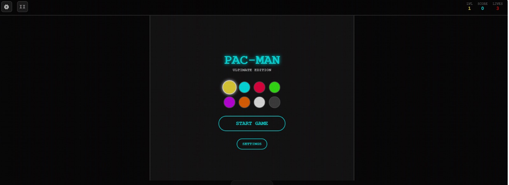
Rekreasi gim klasik Pacman menggunakan Vanilla JavaScript murni. Proyek ini mendemonstrasikan pemahaman mendalam terkait manipulasi *Canvas*, *collision detection*, dan logika pergerakan entitas.
Tinjau Aplikasi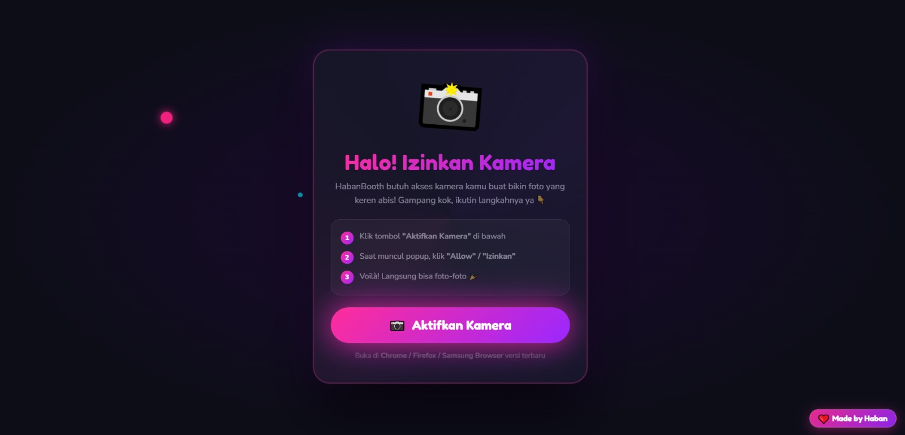
Aplikasi web interaktif yang memanfaatkan WebRTC API untuk mengakses kamera pengguna secara aman, mengaplikasikan filter, dan menangkap gambar langsung dari *browser*.
Tinjau Aplikasi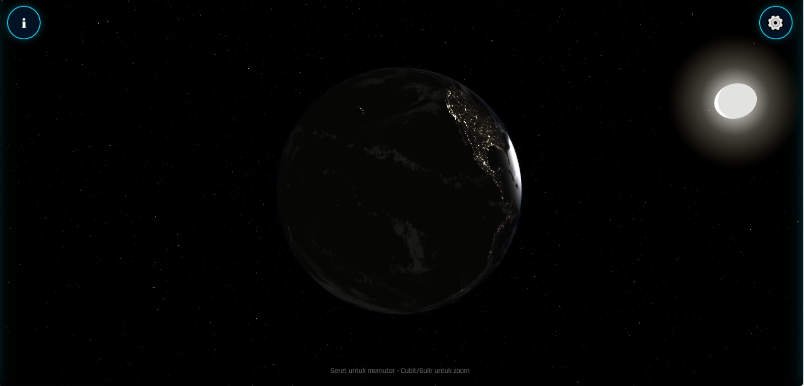
Simulasi model planet Bumi 3D interaktif yang di-render secara *real-time* di web. Sebuah eksperimen optimalisasi *mesh* dan pencahayaan dinamis pada lingkungan WebGL.
Tinjau Aplikasi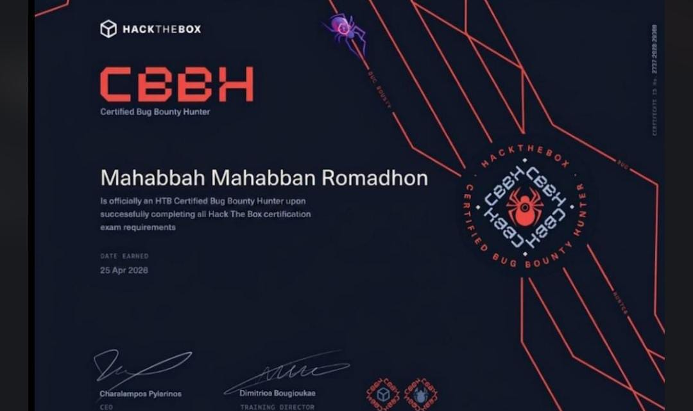
Kredensial profesional tingkat lanjut di bidang keamanan siber praktis, mengesahkan kemampuan dalam melakukan identifikasi, eksploitasi, dan pelaporan celah keamanan sistem informasi. Disahkan oleh Charalampos Pyarinos (CEO).
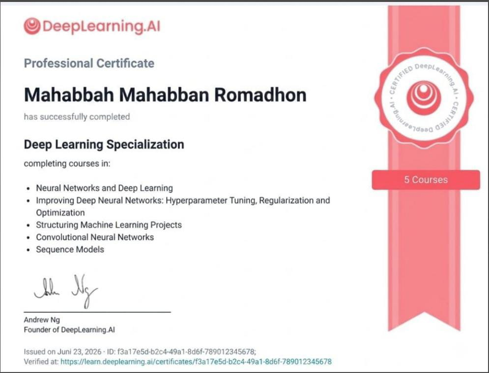
Program spesialisasi intensif di bawah bimbingan Andrew Ng. Menguasai arsitektur *Neural Networks*, *Hyperparameter Tuning*, implementasi *CNNs* (Visual Data), dan *Sequence Models* (NLP/Audio).
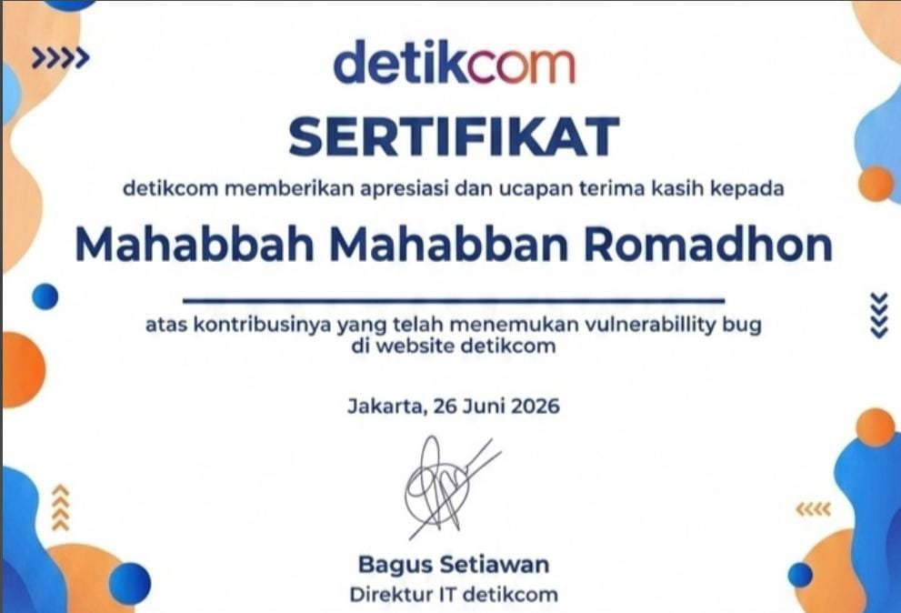
Sertifikat apresiasi resmi (Hall of Fame) yang diterbitkan oleh Bagus Setiawan (Direktur IT detikcom) atas dedikasi dan tanggung jawab dalam menemukan serta melaporkan celah keamanan krusial pada platform detikcom.
Memahami kebutuhan, target pengguna, dan batasan teknis proyek secara mendalam sebelum satu baris kode pun ditulis — memastikan solusi yang dibangun benar-benar tepat sasaran.
Merancang arsitektur sistem, alur data, dan struktur antarmuka yang skalabel — termasuk pertimbangan keamanan sejak tahap perencanaan (*security by design*).
Implementasi iteratif dengan pengujian berkelanjutan — mencakup *unit testing*, *penetration testing* dasar, dan optimasi performa di setiap tahap.
Peluncuran ke lingkungan produksi, monitoring pasca-rilis, dan dukungan berkelanjutan untuk perbaikan maupun pengembangan fitur lanjutan.
Saya senantiasa terbuka untuk peluang kolaborasi, konsultasi teknis, pengerjaan proyek *freelance*, maupun tawaran posisi strategis (Full-Time) di industri teknologi.
Hubungi Saya Sekarang
Komentar & Masukan
Punya masukan tentang portofolio ini? Tinggalkan komentar di bawah — cukup isi nama, tanpa perlu login.